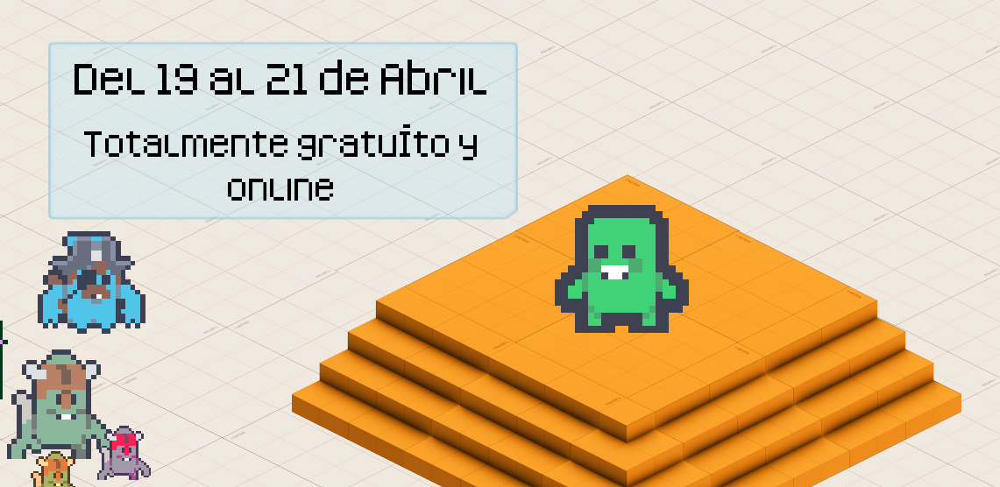
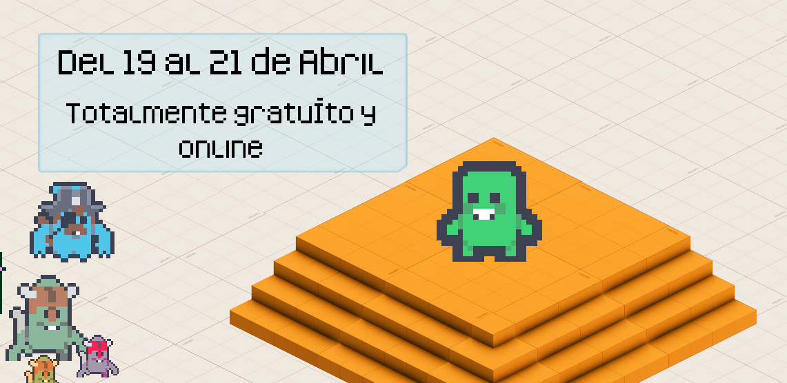
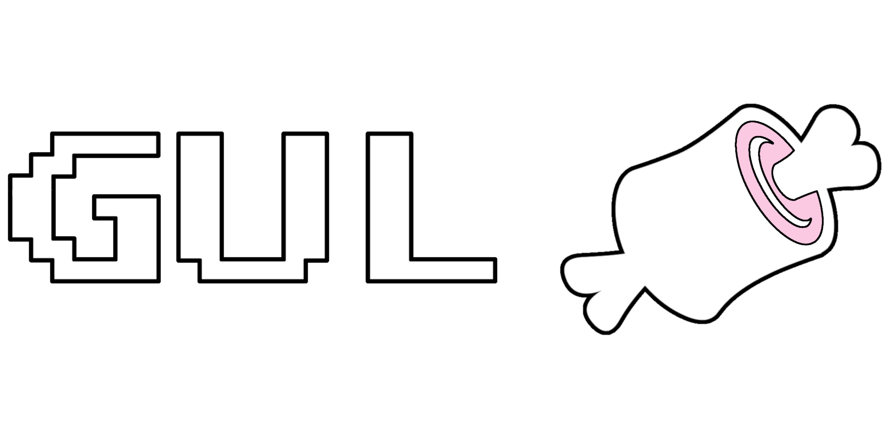

¿Qué es?
La GUL Jamón es el evento del GUL UC3M dedicado a los videojuegos. Tuvo su origen en 2018 como una gamejam.
Dado que somos firmes defensores del software libre este evento no podría ser menos, siendo los protagonistas aquellos motores open-source como Godot, frameworks como Pygame o Löve. o cualquier charla relacionada con los videojuegos: algoritmos, post-mortems, recomendaciones...


Esta edición, subtitulada Charleta Edition, pondrá el foco en charlas y talleres dada por gente de primer nivel, tanto por el lado académico como por el lado más divulgativo.
Todos ellos totalmente gratuítos y online.
Colaboran...
(Alfabéticamente)
Abril 2022
El desarrollo de videojuegos como proceso reivindicativo desde la infancia a la adultez
Isi Cano || 17:00 - 18:00
Enlace a la sesión
Charla y taller acerca de que cualquiera podemos hacer juegos sobre nuestras vivencias e inquietudes. Existen todo tipo de herramientas accesibles hoy en día que nos permiten transmitir nuestras ideas a través de desarrollos sencillos y cercanos.
0 A.D: Empires Ascendant - A free opensource game of ancient warfare
Stanislas Dolcini || 18:00 - 19:00
Enlace a la sesión
(Charla en inglés) This talk will give a general presentation of the project and in ways you can contribute to it.
Introducción a Godot
Juan Linietsky || 16:00 - 16:30
Enlace a la sesión
Breve introducción a Godot, contando sobre el proyecto, orígenes, datos útiles y cómo está conformada la comunidad.
¡Cacharreando con Godot!
Rafa Laguna || 17:00 - 19:00
Enlace a la sesión
Godot es una de las más potentes herramientas para crear juegos... pero ¿estamos limitados a ello? Exploraremos las posibilidades que nos da la herramienta para crear diferentes tipos de juegos, interactivos, aplicaciones y unirlo a hardware de lo más variopinto y/o creado por nosotros mismos.
Audio 3D en Doom
Jose Luis Blanco || 17:00 - 18:00
Enlace a la sesión
Presentación sobre el motor de audio del clásico de 1993 y las posibilidades del audio 3D.
Introducción a la QA en videojuegos
Beatriz Castro || 18:00 - 19:00
Enlace a la sesión
¿Qué es QA? A menudo la QA en videojuegos suele ser una práctica olvidada por muchos y menospreciada por otros. ¿Qué significa hacer QA para un juego? ¿Qué tipos de QA existen? Éstas serán algunas de las preguntas que intentaremos solucionar a lo largo de esta pequeña y breve introducción sobre QA en el mundo de los videojuegos.